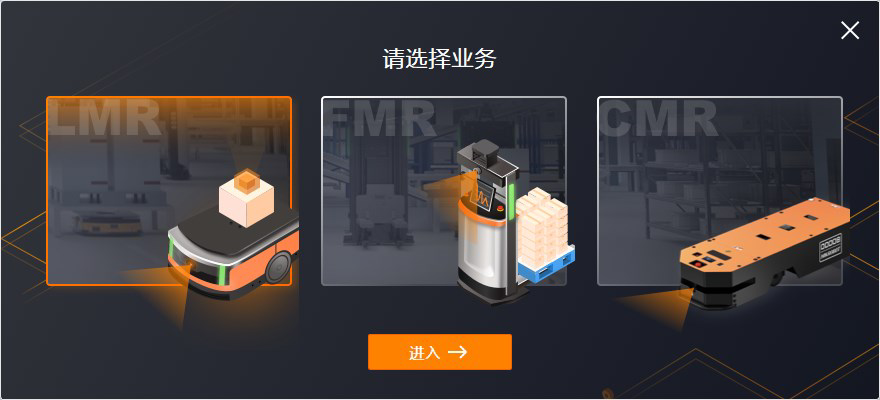
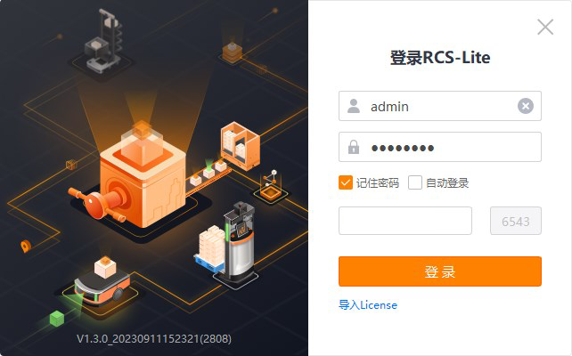
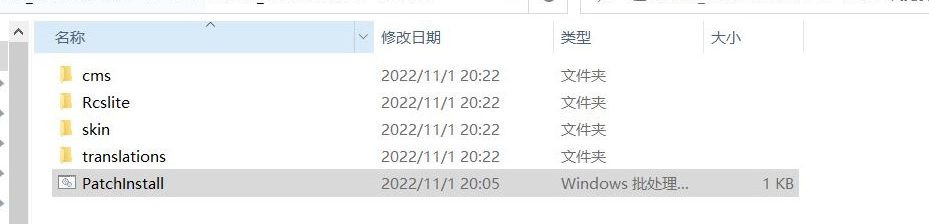
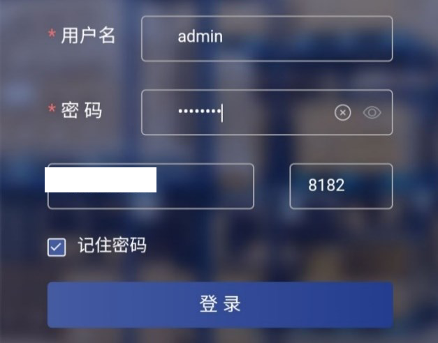

调度系统安装、升级与配套软件部署
调度系统（RCS-Lite）的首次安装、补丁升级、卸载，以及监控客户端、PDA、数据库三类配套件的部署顺序与版本要求。本篇按手册章节顺序整理环境门槛、业务类型选择、License 导入、补丁包升级和 DbTool 切库的具体步骤，并给出每个环节的判断依据。
实施部署目录
本篇为基于厂商操作手册的原创整理，只提炼流程与判断方法，不复制原文；不同版本与控制器存在差异，结论请结合现场验证使用。
适用范围与版本关系
本篇覆盖调度系统 RCS-Lite 的首次安装、升级、卸载，以及配套的监控客户端、PDA、数据库三件事。三点前提先确认：
- 若服务器上已装过旧版调度系统（RCS-2000），必须先卸载旧版本，再装 RCS-Lite，否则服务与端口会冲突。
- 安装包内已自带 SQLite，安装过程中还会自动安装 PostgreSQL，两种数据库都无需另行准备。
- 补丁升级以 V1.3 为基线，是否跨版本流程完全一致，都走补丁包。
首次安装看第 1 章，已装同版本/旧版本要升级的看第 2 章的补丁流程。把升级当成重装去做，会丢掉原有数据和配置。
环境门槛：硬件与操作系统
| 项目 | 要求 |
|---|---|
| CPU | Intel i5 处理器 |
| 内存 | 8 GB 及以上 |
| 硬盘 | 安装目录所在磁盘至少预留 70 GB |
| 操作系统 | Windows 7 / 10 / 11（均为 64 位），或 Windows Server 2016 / 2019 |
70 GB 是安装目录所在那块盘的余量，不是整机总量；日志与数据库后续会持续增长，不要刚好卡着下限部署。
阶段一 · 首次安装
- 清理旧版本：确认服务器上没有 RCS-2000 等在运行的旧调度系统，有则先卸载。
- 核对磁盘空间：安装目录所在磁盘剩余空间 ≥ 70 GB。
- 补运行时库（可选）：若操作系统是 Windows Server，进入安装盘
RcsLite\VCRedist\VC 2015 Redist，双击vc_redist.x64.exe安装。Win 7/10/11 客户端系统一般不需要这一步。 - 运行安装包：按开机向导逐页执行，安装路径选空间充足的磁盘。
安装能走完但程序起不来，或启动即报缺少运行库组件。Windows Server 上务必先装 VC 2015 运行库再安装主程序。
阶段二 · 选择业务类型
首次运行客户端时，必须选择业务类型（按机器人形态区分），选择完成后不再询问：

- 选错了怎么改：进入安装盘
RcsLite\Param，删除clientType.xml，再重新运行客户端。 - 切换代价：不同业务类型之间的数据库不通用，切换模式需要删除并重建数据库，属于有损操作。
业务类型要与现场实际机器人形态一致。误选后再切换会清掉已有数据，交付前务必与项目经理核对。
阶段三 · 登录与导入 License
- 输入登录信息：用户名默认
admin；密码为交付的初始密码；服务器 IP 为安装 RCS-Lite 的服务器地址；端口默认6543。 - 多网卡服务器必须选对业务网段的 IP，选错会出现「能连上但业务异常」。
- 点击导入 License，选择授权文件；未导入 License 无法进入系统。
- 点击登录，进入后立即修改默认密码，并按规定周期更新。

阶段四 · 补丁升级
升级不区分是否跨版本，统一用补丁包：
- 关闭正在运行的调度系统。
- 打开补丁包目录，双击
PatchInstall（Windows 批处理）。 - 按 cmd 窗口中的提示逐项确认，等待执行完成。
- 升级结束后重新启动调度系统，确认能正常登录。

cms、Rcslite、skin、translations 与 PatchInstall。补丁包需整体保留，不要只拷 PatchInstall。补丁执行前导出配置并备份数据库，这是回滚的唯一依据；升级窗口内不要有其他客户端在写数据。
阶段五 · 卸载
- 关闭调度系统与所有客户端。
- 进入软件安装目录，运行
uninst.exe，按提示完成卸载。 - 确认服务已停止、目录已清理干净，再安装新版本。
卸载前同样备份数据库与配置。需要「原地重装」的现场，务必走完卸载再装，直接覆盖安装容易残留旧服务。
配套软件：版本必须配对
| 配套软件 | 支持版本 | 业务 / 端口 |
|---|---|---|
| 监控客户端 | V3.2.0（其他版本不兼容） | 业务选择「搬运系统」，端口 6543 |
| PDA | V1.0.1（其他版本不兼容） | 端口 8182 |
两者都填安装调度系统那台服务器的 IP，不是自己的工控机 IP。

8182。图中服务器地址已遮盖，请填调度服务器 IP。版本不配套的典型表现是登录直接失败或登录后功能缺失，而不是报错提示版本，所以部署前先核对版本号再做联调。
数据库：先看类型，再决定是否切换
- 进入安装盘
RcsLite目录，运行DbTool.exe，可查看当前使用的数据库类型。 - 默认使用 SQLite（安装包自带），无需额外安装。
- 如需切换到 PostgreSQL：先手动安装 PostgreSQL 服务，安装时记录数据库密码与端口（端口默认
5432）。 - 再次运行
DbTool.exe，类型选 PostgreSQL，填写 DB 名称、用户名、密码、IP（服务器地址）、端口后点设置。 - 重启服务，确认数据正常。
切换数据库类型或业务模式都会导致既有数据不可用。必须在停机窗口内进行，且提前完成数据库与配置备份；密码、端口未记录会导致后续无法连接。
常见问题与判断顺序
| 现象 | 先查什么 | 处理 |
|---|---|---|
| 安装/启动报缺少运行库 | 是否为 Windows Server 且未装 VC 2015 运行库 | 补装 vc_redist.x64.exe 后重试 |
| 客户端登录失败 | 先版本（客户端 V3.2.0）、再 IP、最后 6543 端口 | 版本不配套则换版本；IP 错则重选网卡地址 |
| 能登录但业务数据异常 | 多网卡服务器选错业务网段 IP | 按服务器网卡地址逐项核对 |
| PDA 连不上 | 8182 端口与服务器防火墙策略 | 放通端口，确认 PDA 与服务器同网段可达 |
| 切换业务类型后没有数据 | 不同业务类型数据库相互独立 | 属正常现象，确认是否真需要切换 |
| 升级后功能缺失 | 补丁包是否完整、是否漏跑 PatchInstall | 重新执行补丁并重启服务 |
交付收尾
- 安装完成后先登录一次，确认 License 已导入、业务类型正确、监控客户端能连上。
- 修改默认密码并登记到交付资料；默认账号
admin不得继续使用初始密码上线。 - 多网卡服务器把业务 IP、端口（6543 / 8182）、数据库类型与连接信息写入交付记录。
- 把补丁包、安装包与备份的数据库放在同一交付目录，便于后续回退或扩容。
- 若后续还要接外设（呼叫器、自动门、电梯），需在同一套调度系统内继续配置，相关步骤见外设对接篇。
调度系统能登录、监控客户端 V3.2.0 能连、PDA V1.0.1 能连、地图与任务数据可正常读写，四项齐全才算部署完成。
上线前核对
- 服务器 CPU / 内存 / 安装盘剩余空间满足 i5、8 GB、70 GB
- 操作系统为 64 位且属于受支持版本（Win7/10/11 或 Server 2016/2019）
- 服务器上已有的旧版调度系统已卸载，无端口冲突
- Windows Server 已安装 VC 2015 运行库（vc_redist.x64.exe）
- 首次运行已选择正确业务类型，并了解切换需删除 clientType.xml 且会清库
- 已导入 License，登录后立即修改默认密码
- 多网卡服务器登录时选择的是业务网段 IP，端口使用 6543
- 升级走补丁包：已关闭程序 → 运行 PatchInstall → 按提示完成 → 重启验证
- 升级/卸载前已备份数据库与配置，可回退
- 监控客户端为 V3.2.0（业务选搬运系统），PDA 为 V1.0.1（端口 8182）
- 如需 PostgreSQL，已安装服务并记录密码与端口（默认 5432），DbTool 中验证连接成功
- 交付记录中已登记业务 IP、端口、数据库类型与初始账号信息